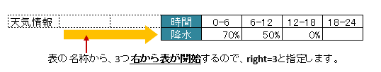
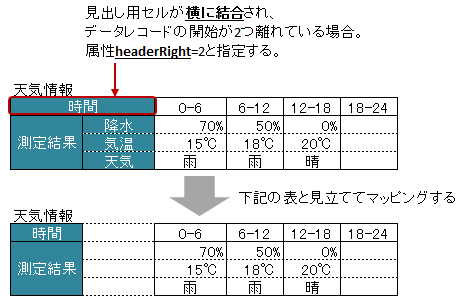

-
@Target(value={METHOD,FIELD}) @Retention(value=RUNTIME) @Documented public @interface XlsVerticalRecords
垂直方向に連続する列をCollection(List, Set)または配列にマッピングする際に指定します。アノテーション
XlsHorizontalRecordsを垂直方向にしたものであり、使い方はほとんど同じです。ここでは、アノテーション
XlsHorizontalRecordsと異なる部分を説明します。
詳細は、アノテーションXlsHorizontalRecordsの説明を参照してください。基本的な使い方
表名を、属性
tableLabel()で指定します。レコード用クラスは、列の定義をアノテーション
XlsColumnで指定します。// シート用クラス @XlsSheet(name="Weather") public class SampleSheet { @XlsVerticalRecords(tableLabel="天気情報") private List<WeatherRecord> records; } // レコード用クラス public class WeatherRecord { @XlsColumn(columnName="時間") private String time; @XlsColumn(columnName="降水") private double precipitation; }
基本的な使い方
表の名称の位置の指定
実際に表を作る場合、垂直方向ですが表の名称は上方に設定することが一般的です。
そのような場合、属性
tableLabelAbove()の値を'true' に設定すると表のタイトルが上方に位置するとして処理します。// シート用クラス @XlsSheet(name="Weather") public class SampleSheet { @XlsVerticalRecords(tableLabel="天気情報", tableLabelAbove=true) private List<WeatherRecord> records; }
表の名称が上方にある場合
表の名称から開始位置が離れた場所にある場合
表の名称が定義してあるセルの直後に表がなく離れている場合、属性
right()で表の開始位置がどれだけ離れているか指定します。XlsHorizontalRecords.bottom()と同じような意味になります。さらに、属性
tableLabelAbove()と組み合わせると、下方向にどれだけ離れているかの意味になります。@XlsSheet(name="Users") public class SampleSheet { @XlsHorizontalRecords(tableLabel="天気情報", right=3) private List<WeatherRecord> records; }表の名称から離れている際の開始位置の指定
表の名称から開始位置が離れた場所にある場合
表の名称が定義してあるセルの直後に表がなく離れている場合、属性
#bottom()で表の開始位置がどれだけ離れているか指定します。@XlsSheet(name="Users") public class SampleSheet { @XlsHorizontalRecords(tableLabel="ユーザ一覧", bottom=3) private List<UserRecord> records; }
表の名称から離れている際の開始位置の指定
表の見出しが横に結合されデータレコードの開始位置が離れた場所にある場合
表の見出しセルが横に結合され、データレコードの開始位置が離れている場合、属性
headerRight()でデータレコードの開始位置がどれだけ離れているか指定します。 `[ver1.1]`下記の例の場合、見出しの「測定結果」は縦に結合されているため
XlsColumn.headerMerged()と組み合わせて利用します。// シート用クラス @XlsSheet(name="Weather") public class SampleSheet { // 見出しが横に結合され、データのレコードの開始位置が離れている場合 XlsVerticalRecords(tableLabel="クラス情報", headerRight=2) private List<SampleRecord> records; } } // レコード用クラス public class SampleRecord { @XlsColumn(columnName="時間") private String name; // セル「降水」のマッピング @XlsColumn(columnName="測定結果") private double precipitation; // セル「気温」のマッピング // 結合されている見出しから離れている数を指定する @XlsColumn(columnName="測定結果", headerMerged=1) private int temperature; / セル「天気」のマッピング // 結合されている見出しから離れている数を指定する @XlsColumn(columnName="測定結果", headerMerged=2) private String wather; }表の見出しからデータレコードが離れているときの指定
書き込み時にレコードが不足、余分である場合の操作の指定
属性
overRecord()、属性remainedRecord()で、書き込み時のレコードの操作を指定することができますが、XlsHorizontalRecordsの場合は一部の設定が使用できません。overRecord()の場合、列の挿入を行うOverRecordOperate.Insertは使用できません。
また、remainedRecord()の場合、列の削除を行うRemainedRecordOperate.Deleteは使用できません。
これは、Apache POIが一括で列の挿入や削除の処理を行うことをサポートしていないためです。表の名称を正規表現、正規化して指定する場合
シートの構造は同じだが、ラベルのセルが微妙に異なる場合、ラベルセルを正規表現による指定が可能です。
また、空白や改行を除去してラベルセルを比較するように設定することも可能です。正規表現で指定する場合、アノテーションの属性の値を
/正規表現/のように、スラッシュで囲みます。- スラッシュで囲まない場合、通常の文字列として処理されます。
- 正規表現の指定機能を有効にするには、システム設定のプロパティ
XlsMapperConfig.setRegexLabelText(boolean)の値を trueに設定します。
ラベセルの値に改行が空白が入っている場合、それらを除去し正規化してアノテーションの属性値と比較することが可能です。
- 正規化とは、空白、改行、タブを除去することを指します。
- ラベルを正規化する機能を有効にするには、、システム設定のプロパティ
XlsMapperConfig.setNormalizeLabelText(boolean)の値を trueに設定します。
これらの指定が可能な属性は、
tableLabel()、terminateLabel()です。// システム設定 XlsMapper xlsMapper = new XlsMapper(); xlsMapper.getConfig() .setRegexLabelText(true) // ラベルを正規表現で指定可能にする機能を有効にする。 .setNormalizeLabelText(true); // ラベルを正規化して比較する機能を有効にする。 // シート用クラス @XlsSheet(name="Users") public class SampleSheet { // 正規表現による指定 @VerticalRecords(tableLabel="/ユーザ一覧.+/") private List<UserRecord> records; }- バージョン:
- 1.1
- 作成者:
- Naoki Takezoe, T.TSUCHIE
-
-
任意要素の概要
任意要素 修飾子とタイプ 任意要素と説明 StringheaderAddress表の開始位置のセルのアドレスを'A1'などのように指定します。intheaderColumn表の開始位置（見出し列）セルの行番号を指定する。intheaderLimitテーブルのカラムが指定数見つかったタイミングで Excelシートの走査を終了したい場合に指定します。intheaderRight見出し用セルから、データ行の開始位置がどれだけ離れているかを指定します。intheaderRow表の開始位置（見出し行）セルの行番号を指定する。booleanignoreEmptyRecord空のレコードの場合、処理を無視するかどうか。booleanoptionalレコードが見つからない場合に、エラーとしないで、無視して処理を続行するかどうかを指定します。OverRecordOperateoverRecord書き込み時にデータのレコード数に対してシートのレコードが足りない場合の操作を指定します。intrange右方向に向かって指定したセル数分を検索し、最初に発見した空白以外のセルを見出しとします。Class<?>recordClassレコードのマッピング先のクラスを指定します。RemainedRecordOperateremainedRecord書き込み時にデータのレコード数に対してシートのレコードが余っている際の操作を指定します。intrighttableLabel()で指定した表のタイトルから、実際の表の開始位置がどれだけ離れているか指定する。StringtableLabel表の見出し（タイトル）ラベルを指定します。booleantableLabelAbove表の名称（タイトル）ラベルの位置が上方に位置するかどうか指定します。RecordTerminalterminal表の終端の種類を指定します。StringterminateLabel表の終端を示すセルの文字列を指定します。
-
-
-
要素の詳細
-
optional
public abstract boolean optional
レコードが見つからない場合に、エラーとしないで、無視して処理を続行するかどうかを指定します。- 戻り値:
- trueの場合、無視して処理を続行します。
- デフォルト:
- false
-
tableLabel
public abstract String tableLabel
表の見出し（タイトル）ラベルを指定します。 値を指定した場合、ラベルと一致するセルを起点に走査を行う。属性
headerRow(),headerColumn()headerAddress()のどちらか一方を指定可能です。システム設定により、正規表現による指定や正規化（改行、空白、タブの削除）による比較の対象となります。
- デフォルト:
- ""
-
tableLabelAbove
public abstract boolean tableLabelAbove
表の名称（タイトル）ラベルの位置が上方に位置するかどうか指定します。- 戻り値:
- trueの場合、表の名称（タイトル）が上方にあるとして処理をします。
- 導入されたバージョン:
- 1.0
- デフォルト:
- false
-
terminateLabel
public abstract String terminateLabel
表の終端を示すセルの文字列を指定します。テーブルが他のテーブルと連続しており、属性
terminal()でBorder、Emptyのいずれを指定しても終端を検出できない場合に指定しますシステム設定により、正規表現による指定や正規化（改行、空白、タブの削除）による比較の対象となります。
- 戻り値:
- デフォルト:
- ""
-
headerColumn
public abstract int headerColumn
表の開始位置（見出し列）セルの行番号を指定する。- 戻り値:
- 値は0から始まり、指定しない場合は-1を指定します。
- デフォルト:
- -1
-
headerRow
public abstract int headerRow
表の開始位置（見出し行）セルの行番号を指定する。- 戻り値:
- 値は0から始まり、指定しない場合は-1を指定します。
- デフォルト:
- -1
-
headerAddress
public abstract String headerAddress
表の開始位置のセルのアドレスを'A1'などのように指定します。値を指定した場合、指定したアドレスを起点に走査を行います属性
headerRow(),headerColumn()のどちらか一方を指定可能です。- 戻り値:
- デフォルト:
- ""
-
recordClass
public abstract Class<?> recordClass
レコードのマッピング先のクラスを指定します。指定しない場合は、Genericsの定義タイプを使用します。
- デフォルト:
- java.lang.Object.class
-
terminal
public abstract RecordTerminal terminal
表の終端の種類を指定します。 returnRecordTerminal.Emptyの場合、空のレコードがあると処理を終了します。- デフォルト:
- com.gh.mygreen.xlsmapper.annotation.RecordTerminal.Empty
-
range
public abstract int range
右方向に向かって指定したセル数分を検索し、最初に発見した空白以外のセルを見出しとします。- 戻り値:
- 値は1から始まり、指定しない場合は1を指定します。
- デフォルト:
- 1
-
right
public abstract int right
tableLabel()で指定した表のタイトルから、実際の表の開始位置がどれだけ離れているか指定する。右方向の列数を指定する。
tableLabelAbove()の値がtrueの場合は、下方向に行数になる。- 戻り値:
- 値は1から始まり、指定しない場合は1を指定します。
- 導入されたバージョン:
- 1.0
- デフォルト:
- 1
-
headerLimit
public abstract int headerLimit
テーブルのカラムが指定数見つかったタイミングで Excelシートの走査を終了したい場合に指定します。主に無駄な走査を抑制したい場合にしますが、
XlsIterateTables使用時に、 テーブルが隣接しており終端を検出できない場合などに カラム数を明示的に指定してテーブルの区切りを指定する場合にも使用できます。- 戻り値:
- 値は0から始まり、指定しない場合は0を指定します。
- デフォルト:
- 0
-
headerRight
public abstract int headerRight
見出し用セルから、データ行の開始位置がどれだけ離れているかを指定します。右方向の列数を指定します。
見出しが横に結合されているような場合に指定します。
- 戻り値:
- 値は1から始まり、指定しない場合は1を指定します。
- 導入されたバージョン:
- 1.1
- デフォルト:
- 1
-
overRecord
public abstract OverRecordOperate overRecord
書き込み時にデータのレコード数に対してシートのレコードが足りない場合の操作を指定します。XlsVerticalRecordsの場合、OverRecordOperate.Insertは対応していません。- 戻り値:
OverRecordOperate.Breakの場合、足りないレコードがあるとそこで処理を終了します。
- デフォルト:
- com.gh.mygreen.xlsmapper.annotation.OverRecordOperate.Break
-
remainedRecord
public abstract RemainedRecordOperate remainedRecord
書き込み時にデータのレコード数に対してシートのレコードが余っている際の操作を指定します。XlsVerticalRecordsの場合、RemainedRecordOperate.Deleteは対応していません。- 戻り値:
RemainedRecordOperate.Noneの場合、余っているレコードがあっても何もしません。
- デフォルト:
- com.gh.mygreen.xlsmapper.annotation.RemainedRecordOperate.None
-
ignoreEmptyRecord
public abstract boolean ignoreEmptyRecord
空のレコードの場合、処理を無視するかどうか。レコードの判定用のメソッドに、アノテーション
XlsIsEmptyを付与する必要があります。- 戻り値:
- trueの場合、空のレコードを無視します。
- 導入されたバージョン:
- 0.2
- デフォルト:
- false
-
-